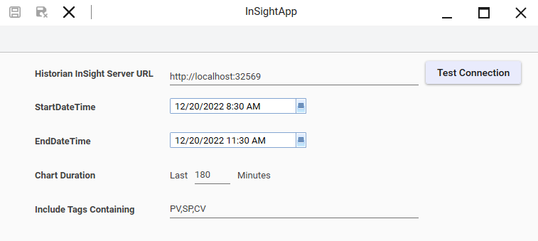
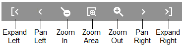

InSightChartControl Properties: Chart configuration showing Historian server URL, query time range, chart duration, and include tags filter
Module 10 — Trends | Pages 617-624

5. Include Tags Containing: PV,SP,CV (keyword filter)
• AVEVA™ Operations Management Interface 2023]
Section 3 – Historical Trending
Section 3 – Historical Trending
Introduction
Historian and Historian Client provide client applications that can access the Historian database.
These clients are the Historian Client Web and Historian Client Trend applications.
Historian Client Web helps to retrieve historical data through the web browser and present data in
different formats, such as trends, tables, and more. On a remote client node, you can access the
Historian database through the web client using a web browser. With Historian Client Web, you
can present your data in a chart, work with data using dashboards, save and share content, and
view and reuse content. You can search for specific saved content, tags, or keywords and view the
results in a chart. You can choose the chart type, add or remove tags from the chart, and fine-tune
how content is displayed. You can save, download, and share the content. You can also embed
the content in a web page or other HTML-based document.
Historian Client Trend also helps to retrieve historical data and present data in trend format. You
can access the Historian database on a remote client node using the Trend client application. With
Historian Client Trend, you can query tags from a Historian database and plot them on different
types of charts and manipulate the charts in different ways, including panning, zooming, and
scaling. You can also customize the trend by configuring available options.
InSightApp
InSightApp is an out-of-the-box OMI App for running an active Insight browser session within a
pane of a running ViewApp. The InSightApp provides a visualization of operational data by
retrieving information from the Historian. The InSightApp includes a search engine for retrieving
relevant information from tags that include defined keywords.
InSightApp Global Settings
InSightApp global settings are configured in the InSightApp Global Editor. You can open the
InSightApp Global Editor by double-clicking the InSightApp from the Graphics tab. From the editor,
you can configure the Historian InSight server URL, the start date and time, the end date and time,
the chart duration, and keywords defined for searching tags. You can also use the Test
Connection button to verify connection to the specified InSight server.
This section describes using the InSightApp and the HistoricalTrendApp for historical trending in
a ViewApp.
InSightApp Properties
To use the InSightApp in a ViewApp, it must be assigned to a layout pane in the Layout Editor or
ViewApp Editor. Once the InSightApp is assigned to a pane, you can customize the properties that
include Historian InSight server URL, query start time, query end time, chart duration, and
keywords defined for searching tags. You can also create an event handler script by selecting an
event in the available events list of the control.
Chart configuration properties set by the Global Editor and properties set from the Layout or
ViewApp editors may not be the same. InSightApp properties are evaluated in a running ViewApp
only when the default values are changed and have a higher precedence over chart configuration
properties set with the InSightApp Global Editor.
InSightApp Security Requirements
A logged in user must be an authorized Historian user to view a chart displayed by the InSightApp
in a running ViewApp. InSightApp uses the single sign-on service of the ViewApp. To use the
InSightApp, the security authentication mode for the Galaxy must be configured as OS Group or
OS User based. The Galaxy security authentication mode is not supported.
InSightApp runs in the context of the logged on ViewApp user. A valid InSightApp user must be a
member of one of the following groups:
aaAdministrators
aaPowerUsers
aaUsers
At runtime, if security is not enabled for the Galaxy, a user is not logged on to the ViewApp, or the
user logged on to the ViewApp is not a valid InSightApp user, a message appears within the
InSightApp.



• Text: "You can hover your mouse over the x-axis in the chart to show a floating toolbar, which provides time- and zoom-related tools."
• AVEVA™ Operations Management Interface 2023]
Section 3 – Historical Trending
InSightApp at Runtime
In a running ViewApp, the InSightApp searches for keywords defined in the InSightApp properties,
based on the asset of the current navigation. If the current asset has attributes that contain the
search keywords, the InSightApp will retrieve historical data for the asset. The historical data will
be presented as a trend chart.
The trend chart may have one or more pens, based on the number of attributes in the asset that
contain the search keywords. In runtime, the trend chart includes the current asset name, trend
pens, and an interactive legend. When you hover your mouse over the chart, a cursor appears
with values for all tags. You can move the cursor along the x-axis to see values for specific points
in time.
You can click the ellipsis button in the legend at the bottom to display a menu of units of measure.
Selecting a different unit of measure converts the data in the display to the new unit of measure.
You can hover your mouse over the x-axis in the chart to show a floating toolbar, which provides
time- and zoom-related tools.


You can also click the y-axis to adjust scaling settings for the chart.
When the associated tags in the InSightApp have alarms and events, the trend displays with
additional indicators:
For alarms, the trend lines display with highlights. For example, the yellow highlights
indicate Severity 2 alarms for the attribute and the red highlights indicate Severity 1
alarms. You can click on the highlighted area on the trend line to see additional
information about that alarm.

Section 3 – Historical Trending
For events, trend lines display with event icons. You can click on an icon to see additional
information related to that event.
HistoricalTrendApp
Another out-of-the-box OMI App is the HistoricalTrendApp, which is based on the Historian Client
Trend application. To use the HistoricalTrendApp, you must assign it to a layout pane in the Layout
Editor or ViewApp Editor.
At runtime, you can configure the server connections, add tags from a Historian database, and plot
them on a trend chart. You can also manipulate the display for panning, zooming, and scaling.
Other configurations are available for customizing the trend chart and a selected pen.
You can use the HistoricalTrendApp to display different types of charts, which are a regular trend
curve and an XY scatter plot.
HistoricalTrendApp Properties
The HistoricalTrendApp provides a set of design-time properties that enable or disable visual and
functional components of the HistoricalTrendControl during runtime. Once added to a layout pane,
the HistoricalTrendControl properties show on the Properties tab in the Layout Editor. You can use
the search feature on the Properties tab to search for a property by name.
General properties show the name of the control, the control as content, and the name of
the pane in which the HistoricalTrendApp control is placed.
Run-Time Behavior properties are the native properties of the HistoricalTrendApp. For
example, the Follow Current Context property determines if the control shows trend for the
tags belonging to the current context. If checked, the Max Context Tags to Show property
determines the maximum number of tags that can be shown on the trend.
The Pens property lets you add specific tags, in addition to tags displayed for the current
context. The value for Pens can be one or more fully qualified tag names or a reference to
an attribute that contains the fully qualified tag names. Separate multiple tag names with a
comma.
.NET Trend Control properties are from the underlying .NET trend control that are
exposed and can be assigned values from the Layout Editor or included in scripts.
.NET property groups are identified by the TrendControl prefix in their titles that appear on
the Properties tab. For example, the TrendControl.Accessibility title appears immediately
beneath the Run-Time Behavior group of properties.

For more information about .NET properties, please refer to Microsoft resources, such as:
https://docs.microsoft.com/en-us/dotnet/api/system.windows.forms
For more information about TrendControl.Misc properties, please refer to AVEVA Historian
Client User Guide.
Binding HistoricalTrendApp Run-Time Properties
The HistoricalTrendApp includes runtime properties that are exposed as configurable properties,
which determine the visual aspects or functional behaviors of the HistoricalTrendApp during
runtime.
Most of the properties include a list of binding options to configure a static or dynamic value based
on the type of binding between the property and its associated reference. You can select a binding
option from the list and then configure the values by specifying a reference, such as a reference to
an attribute defined in a custom ViewApp namespace or a public custom property of a symbol
assigned in the same layout. With a dynamic binding option, these properties can be changed
dynamically based on the reference values at runtime.
In the example below, the Pens property is binding to the reference:
MyContent.TrendControlConfig1.AddMorePens


Section 3 – Historical Trending
AddMorePens is a public custom property defined in a symbol named TrendControlConfig, which
is assigned to the same layout with the HistoricalTrendControl.
Event Handlers
The Event Handlers category on the Properties tab lists all available events for the control, and
you can create an event handler script by selecting an event from the list. The underlying control of
the HistoricalTrendApp includes a set of public events that can be used for creating event handler
scripts. These events are identified by the TrendControl prefix in their names that appear in the list
of the available events. You can select a public event of the control from the list to add an event
handler script.
The following example shows only a portion of the available events.

Then, you can navigate to the Script page to edit the script by selecting the ellipsis to the right of
the added script. More information about layout scripts is provided in Module 13.
Review the key concepts section above for the core topics discussed.
Consider how the concepts in this lesson fit into the broader System Platform and OMI framework.